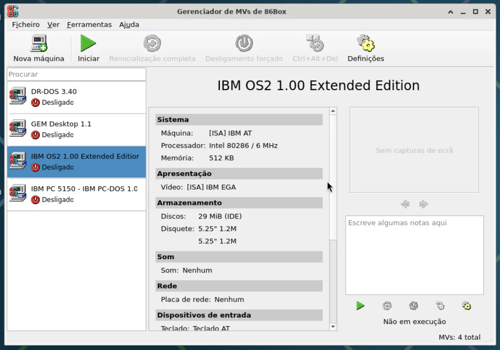

1. Preparar a VM Retro-x86
Foi criada no Proxmox VE 9 a VM 2002 — Retro-x86, com Debian 13.7, ambiente gráfico XFCE e acesso SSH a partir do macOS. A rede foi necessária para descarregar código, ferramentas e imagens, mas o objetivo final é retirar a interface de rede da VM.
O 86Box funciona dentro do Debian, e não diretamente no Proxmox: o Debian é o anfitrião do emulador e gere os ficheiros e a interface gráfica.
2. Obter o código-fonte
O repositório do projeto foi clonado em /opt/86Box:
cd /opt
git clone https://github.com/86Box/86Box.gitFonte oficial: GitHub — 86Box.
3. Dependências e configuração
Foi utilizada a configuração Release do CMake. A primeira tentativa revelou dependências ausentes, resolvidas progressivamente. As bibliotecas necessárias nesta experiência incluíram wxWidgets, SDL2, SDL3, OpenAL, RtMidi, FluidSynth, libsndfile, libserialport, libslirp, zstd, Qt5 e cabeçalhos Vulkan.
cd /opt/86Box
mkdir -p build
cd build
cmake .. -DCMAKE_BUILD_TYPE=ReleaseErros encontrados e soluções
| Problema | Pacote que resolveu |
|---|---|
| zstd não encontrado | libzstd-dev |
| Componentes base Qt5 não encontrados | qtbase5-dev e qtbase5-dev-tools |
| Qt5LinguistTools em falta | qttools5-dev e qttools5-dev-tools |
| SDL3 não encontrado | libsdl3-dev |
qpa/qplatformwindow.h em falta | qtbase5-private-dev |
Este registo descreve as dependências que foram aparecendo no sistema utilizado; não constitui uma lista completa e universal de pacotes necessários em qualquer Debian.
4. Compilação final
Depois das correções, a compilação foi concluída utilizando dois processos em paralelo:
cd /opt/86Box/build
cmake --build . --parallel 2Executável obtido: /opt/86Box/build/src/86Box.
5. Obter as ROMs e iniciar o programa
O 86Box precisa das ROMs correspondentes às máquinas e aos periféricos emulados. Foi utilizado o arquivo oficial 86Box/roms:
cd /opt
git clone https://github.com/86Box/roms.gitA coleção ficou em /opt/roms. O comando efetivamente testado para iniciar a interface foi:
/opt/86Box/build/src/86Box -R /opt/roms-R /opt/roms no atalho, para que esta instalação local utilize explicitamente a coleção de ROMs.6. Execução no XFCE
A primeira tentativa de executar a aplicação como root, a partir de SSH, falhou porque não tinha acesso à sessão gráfica. O problema não era da compilação. O programa foi posteriormente aberto no XFCE com o utilizador normal nuno, e o gestor de máquinas apareceu corretamente.
A localização configurada para as máquinas é /home/nuno/.local/share/86Box/Virtual Machines/; a configuração global encontra-se em /home/nuno/.config/86Box/86box_global.cfg. As pastas precisam de permissões adequadas ao utilizador que executa o emulador.

7. Atalho para o ambiente de trabalho
Foi preparado o comando do atalho XFCE. Como o ambiente de trabalho deste utilizador se encontra em /home/nuno/Área de Trabalho/, o ficheiro .desktop deve ser criado na sessão do utilizador e não como root.
[Desktop Entry]
Type=Application
Name=86Box
Comment=Emulador de computadores x86 históricos
Exec=/opt/86Box/build/src/86Box -R /opt/roms
Terminal=false
Categories=Emulator;System;Este é o conteúdo recomendado para o atalho; a sua criação e execução autónoma não ficaram demonstradas nas capturas.
8. Estado final e continuação
| Etapa | Estado documentado |
|---|---|
| Debian 13.7 e XFCE na VM 2002 | Preparados |
| Dependências e CMake | Resolvidos |
| Compilação do 86Box | Concluída |
| ROMs e execução gráfica | Funcionam |
| Criação de máquinas emuladas | Confirmada |
| Atalho XFCE | Comando preparado; validação não documentada |
| Instalações de todos os sistemas históricos | Em curso |
| Remoção da interface de rede da VM | Planeada |
O trabalho de compilação ficou concluído. A instalação e os testes de cada sistema operativo são documentados separadamente, em 86Box: computadores IBM e sistemas históricos.